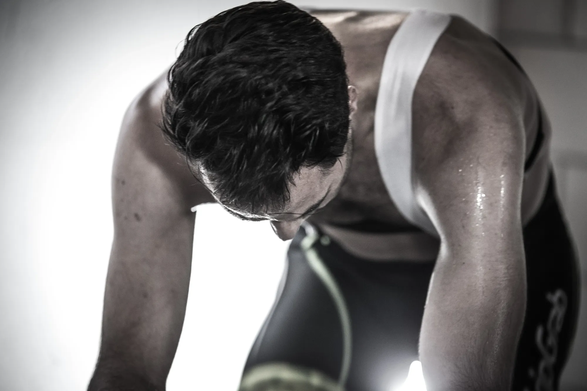

Sinds nov 2015 kampte ik met een liesblessure waardoor voetballen niet mogelijk was. Daarop heb ik ervoor gekozen om rust te nemen in de hoop dat de blessure weg ging. Echter eind februari 2016 nog steeds geen verbetering. Via een bekende ben ik toen bij Ron terecht gekomen. We hebben onze verwachtingen naar elkaar uitgesproken en zijn aan de slag gegaan. Met een zeer persoonlijke begeleiding voelde ik stap voor stap verbetering. Inmiddels ben ik pijnvrij, train ik volledig mee en heb al wat minuutjes gespeeld en ben helemaal klaar om zondag de eerste competitie wedstrijd 90 min te kunnen voetballen. Ron bedankt voor de zeer goede begeleiding!!!!!
Maatwerk voor herstel én prestatie
Iedere sporter is anders. Iedere blessure ook.
Daarom behandelen we jouw blessure niet met een standaardprotocol, maar met een persoonlijk traject, afgestemd op:
- jouw sport
- jouw belastbaarheid
- jouw doelen
Of je nu geblesseerd bent geraakt tijdens voetbal, hardlopen of wielrennen: we bouwen gecontroleerd op richting een veilige en duurzame comeback.
Herstel met vertrouwen
Een blessure is niet alleen fysiek.
Twijfel over je knie, angst voor een terugval of het gevoel dat je lichaam je in de steek laat, beïnvloeden je prestaties. Bij De Kinesist werken we niet alleen aan pijnvermindering, maar juist aan vertrouwen in je lichaam, zodat je weer voluit durft te bewegen en sporten.
Samen werken aan jouw comeback
Net als sportprestaties vraagt herstel om een plan.
Samen met sportfysiotherapeut Ron Beurskens stel je duidelijke doelen en werken we stap voor stap aan je herstel. Je wordt persoonlijk begeleid, je belastbaarheid wordt bewaakt en waar nodig word je uitgedaagd om verantwoord progressie te maken.
Geen wisselende behandelaars. Wel 1-op-1 aandacht.
Specialist in sportfysiotherapie
Ron Beurskens begeleidt al meer dan 20 jaar sporters bij herstel en terugkeer naar sport.
De praktijk van De Kinesist ligt op het prachtige sportpark van Wittenhorst in Horst aan de Maas, gelegen aan de snelweg en daarmee goed bereikbaar voor sporters uit de wijde omgeving.
Consulten duren 45 minuten, zodat er voldoende tijd is voor onderzoek, behandeling en begeleiding.
Onze specialisaties binnen sportfysiotherapie
Voetbalblessures
Voetbal vraagt veel van het lichaam. Vooral knieblessures komen vaak voor.
De Kinesist is gespecialiseerd in:
- Knieklachten bij voetballers
- Voorste kruisband (ACL) revalidatie
- Hamstring-, enkel- en liesblessures
- Begeleiding bij terugkeer naar het veld
Ron is clubfysiotherapeut bij RKSV Wittenhorst en begeleidt voetballers dagelijks in hun revalidatie en sporthervatting.
Hardloopblessures
Hardlopen is eenvoudig, maar belastend.
Wij behandelen onder andere:
- Achillespeesklachten
- Scheenbeenklachten
- Knieklachten (o.a. lopersknie)
- Overbelastingsblessures
Met aandacht voor techniek, belastbaarheid en opbouw.
De Kinesist werkt samen met TopSportief en de Peelrunners.

Wielerblessures
Wielrennen vraagt langdurige en repetitieve belasting van het lichaam. Knie-, rug- en nekklachten ontstaan vaak niet door één oorzaak, maar door een combinatie van belasting, houding en herstel.
Bij De Kinesist behandelen we wielrenners die verder gaat dan symptoombestrijding. We kijken niet alleen naar waar het pijn doet, maar vooral waarom klachten ontstaan en hoe je lichaam belast wordt tijdens het koersen en trainen.
Onze begeleiding bij wielrenblessures kan bestaan uit:
- Uitgebreid sportfysiotherapeutisch onderzoek
- Analyse van belastbaarheid en trainingsopbouw
- Gerichte revalidatie- en opbouwoefeningen
- Advies over herstel, trainingsbelasting en preventie
- Indien nodig kan het behandeltraject worden aangevuld met een BikeFit of inspanningstest, om structurele oorzaken van klachten aan te pakken en terugkeer naar pijnvrij fietsen te versnellen
Sportfysiotherapie afgestemd op de specifieke eisen van het wielrennen.
Ervaringen van sporters
Sporters beoordelen De Kinesist met 5 sterren op Google.
Zorgvuldige, professionele en doelgerichte (één op één) behandeling. De therapieën zijn tevens erg gevarieerd waardoor het ook leuk blijft gedurende het gehele traject. Daarnaast is Ron ontzettend vriendelijk en heeft enigszins wat humor. Zeker niet vervelend om hiermee aan mijn herstel te mogen werken. Ik zou De Kinesist zonder twijfel aan iedereen aanraden! Ron, nogmaals bedankt voor het mooie resultaat! Ik hoop dat je nog vele mensen mag helpen.